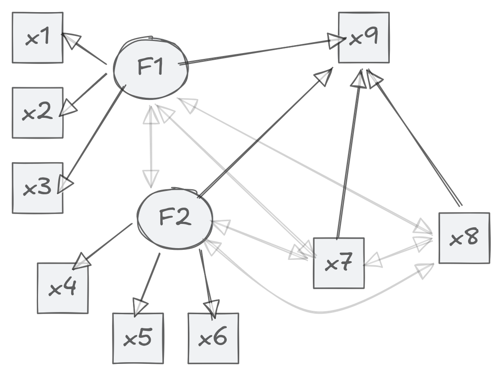

The goal of rccme is to produce regression calibrated scores for downstream regression models.
Installation
You can install the latest version of rccme with:
install.packages(
'rccme',
repos = c(
'https://jamesuanhoro.r-universe.dev',
'https://cloud.r-project.org'
)
)Example
We show how to approach the model below:

dat <- HolzingerSwineford1939[, paste0("x", 1:9)]
sem_fit <- sem(
paste(
"F1 =~ x1 + x2 + x3",
"F2 =~ x4 + x5 + x6",
"x9 ~ F1 + F2 + x7 + x8",
"F1 + F2 ~~ x7 + x8",
sep = "\n"
),
dat,
std.lv = TRUE
)
# two-step using factor analysis ----
cfa_f1 <- cfa("F1 =~ x1 + x2 + x3", dat, std.lv = TRUE)
cfa_f2 <- cfa("F2 =~ x4 + x5 + x6", dat, std.lv = TRUE)
score_f1 <- lavaan::lavPredict(cfa_f1, se = "standard")
score_f2 <- lavaan::lavPredict(cfa_f2, se = "standard")
se_f1 <- unname(attr(score_f1, "se")[[1]][, 1, drop = TRUE])
se_f2 <- unname(attr(score_f2, "se")[[1]][, 1, drop = TRUE])
# save factor scores
dat$f1 <- score_f1
dat$f2 <- score_f2
# calibrate factor scores
rc_fs <- rccme_calib_me(
dat[, c("f1", "f2")],
w_se_vec = c(se_f1, se_f2), z_mat = dat[, c("x7", "x8")]
)
# save calibrated factor scores
dat$f1_rc <- rc_fs[, 1]
dat$f2_rc <- rc_fs[, 2]
# two-step using sum-score ----
# compute standardised sum scores
dat$std_1 <- scale(rowMeans(dat[, c("x1", "x2", "x3")]))
dat$std_2 <- scale(rowMeans(dat[, c("x4", "x5", "x6")]))
# compute coefficient alpha
rel_1 <- psych::alpha(dat[, c("x1", "x2", "x3")])$total$raw_alpha## Warning in response.frequencies(x, max = max): response.frequency has been
## deprecated and replaced with responseFrequecy. Please fix your call
## Number of categories should be increased in order to count frequencies.
rel_2 <- psych::alpha(dat[, c("x4", "x5", "x6")])$total$raw_alpha## Warning in response.frequencies(x, max = max): response.frequency has been
## deprecated and replaced with responseFrequecy. Please fix your call
## Number of categories should be increased in order to count frequencies.
# calibrate sum scores
rc_ss <- rccme_calib_me(
dat[, c("std_1", "std_2")],
# Add `standard = TRUE` for standardised sum scores
rel_vec = c(rel_1, rel_2), z_mat = dat[, c("x7", "x8")], standard = TRUE
)
# save calibrated sum scores
dat$std_1_rc <- rc_ss[, 1]
dat$std_2_rc <- rc_ss[, 2]
# model results ----
# sum-score without measurement error correction
fit_ss <- lm(x9 ~ std_1 + std_2 + x7 + x8, dat)
# sum-score without measurement error correction
fit_ss_rc <- lm(x9 ~ std_1_rc + std_2_rc + x7 + x8, dat)
# with standard factor scores
fit_fs <- lm(x9 ~ f1 + f2 + x7 + x8, dat)
# with calibrated factor scores
fit_fs_rc <- lm(x9 ~ f1_rc + f2_rc + x7 + x8, dat)
# SEM results
sem_fit |>
parameterestimates() |>
subset(op == "~")## lhs op rhs est se z pvalue ci.lower ci.upper
## 7 x9 ~ F1 0.464 0.078 5.945 0.000 0.311 0.616
## 8 x9 ~ F2 -0.018 0.065 -0.285 0.776 -0.145 0.108
## 9 x9 ~ x7 0.191 0.046 4.138 0.000 0.101 0.282
## 10 x9 ~ x8 0.219 0.054 4.061 0.000 0.113 0.324
# Comparing the methods
modelsummary::modelsummary(
list(
"Sum score" = fit_ss,
"Factor scores" = fit_fs,
"Calibrated sum scores" = fit_ss_rc,
"Calibrated factor scores" = fit_fs_rc
),
coef_map = c(
"std_1" = "F1", "std_2" = "F2",
"std_1_rc" = "F1", "std_2_rc" = "F2",
"f1" = "F1", "f2" = "F2",
"f1_rc" = "F1", "f2_rc" = "F2",
"x7" = "x7", "x8" = "x8"
),
output = "markdown", gof_omit = "IC|R2|Log|F|RMSE|Obs",
vcov = function(x) sandwich::vcovHC(x, type = "HC4")
)| Sum score | Factor scores | Calibrated sum scores | Calibrated factor scores | |
|---|---|---|---|---|
| F1 | 0.321 | 0.395 | 0.450 | 0.427 |
| (0.052) | (0.063) | (0.074) | (0.070) | |
| F2 | 0.074 | 0.085 | -0.000 | 0.025 |
| (0.051) | (0.054) | (0.061) | (0.059) | |
| x7 | 0.173 | 0.164 | 0.203 | 0.184 |
| (0.052) | (0.052) | (0.053) | (0.052) | |
| x8 | 0.277 | 0.277 | 0.217 | 0.228 |
| (0.052) | (0.052) | (0.054) | (0.054) | |
| Std.Errors | Custom | Custom | Custom | Custom |